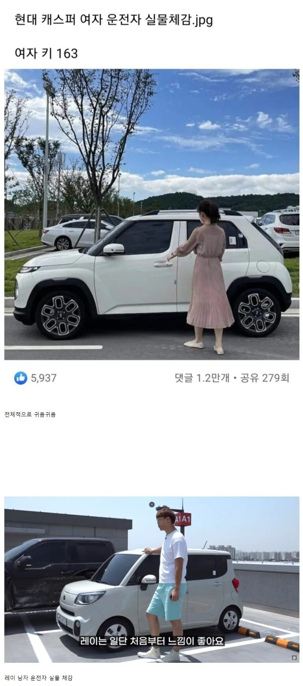
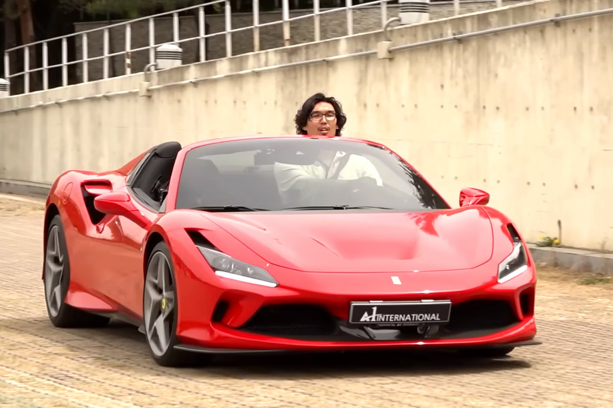

이건 남자 스포츠카 체감


이건 남자 스포츠카 체감

저건 남자중에서도 존나 큰 남자잖아요
비교군이 잘못됐잖앜ㅋㅋ
남자 키는 왜 안적어놔ㅋㅋㅋ
180cm + α
2미터 + α라고 ㅋㅋㅋ
어쨌든 α죠?
더러운 알파메일 ㅠㅠ
무려 nba에서 폭풍2어시를 한 남자이다
큰편
하승진 랩터탄거 주유소에서 봤는데 랩터 한참위로 나오는거 보고 존나 크긴하네 싶더라 ㅋㅋㅋㅋㅋㅋ
여자만 보면 사실경차가 작은차인가 라는 생각좀드네...
남자 컷 존나 높네
하승진 피셜 레이타고 장거리 운전 할만하다 헀는데
그래서 5시간짜리 해남 땅끝마을 가는 컨텐츠 찍음 ㅋㅋㅋ
아래는 오디세이에 나온 거인족아니냐
로두마니 ㅋㅋㅋㅋㅋㅋㅋㅋㅋ
하승진은 대형트럭 타고 다녀야 좀 맞겠네 ㅋㅋㅋㅋ
캐스퍼 출고대기 12개월 실화냐
어디 박으면 참수되겠네
시발 ㅋㅋㅋㅋㅋㅋㅋ 난 여자냐
캐스퍼 높이가 157.5인데
캐스퍼가 레이보다 크지?
ㄴㄴ
다오ㅋㅋ
하은주라고 하승진 선수 누나도 레이 옆에 서면 느낌 비슷할텐데 ㅎㅎ
제가 하승진씨는 만난적 없지만
하은주씨는 몇번 실제로 만났는데
와... 이 사람은 맘만 먹으면 내 목 위에 달린거 한손으로 뽑는건 어렵지 않겠구나 싶은 느낌입니다
누나도 커? 닮았어? 누나인걸 어떻게알았대 신기하당
하은주씨도 유명한 여자 농구 선수 출신임
진짜 키작은분 만난 적 있는데
스파크가 끼익 앞에 섰음, 문 열리고 부시럭거리는 소리 들리다가 문 닫히는 소리 남
그래서 ? 하고 기다렸는데 갑자기 튀어나옴ㅋㅋㅋㅋ
하필 163이냐 ㅋㅋㅋ
그럼 모트라인 윤성로도 똑같이 보이긋네
돌빵 어캄 헬멧 쓰고 타야하는거 아님?
내가 일본 살면서 세컨카로 s660 이랑 다이하츠 코펜 사려고 시승 갔다가 머리가 천장에 닫는대...느낌이 더러워서 못사겠더라
키가 크시군요 s660탈때만 힘들지 타고나면 머리 남긴남던대 코펜이 타고내리기 더쉽나요? 코펜은 안타봐가지고
상체가 긴 저주받은 몸뚱아리라...170초반까지는 편할꺼 같읍니다...개인적으로 타고 내리기는 코펜이 편하더라구요. 660은 진짜 미니카 같이 바닥에도 딱 붙어버리는...
돈많이버나보네
차 자체는 얼마안해ㅋㅋ중고로 사야지~~근대 역시 주차공간이 문제..ㅠㅠ 와이프, 나 각 1대씩 있던거 팔고 지금 짐니만 남기고 있는대 이것도 팔고 모델ｙ로 가려고 준비중...지금 도쿄 보조금 기본받아도 새차 360만엔임ㅋㅋ환율 개박살..물론 내 월급도 개박살이지만...개싸다!!
왤케쌈? 한국은 모델y 오천아닌가
일본은 fsd가능해?
도쿄 보조금이 195만엔임
ㄷㄷ미쳤네..
저번달 도쿄갔을때 테슬라 거의 못본거같은데 왜 안사지
코펜 세로 에디션이 1세대 처럼 꾸며놔서 이쁘드만
레이가 동생같네..
반올림하면 둘다 2미터긴한데...
물풍선 날릴거같음
레이 가격만 비싸고 속도 뒤지게 안나오는 개똥차 ㅋㅋ
저런거 타고 고속도로 나오면 민폐임
공도에 카트를 끌고나오면 어카냐~
카트라이더네